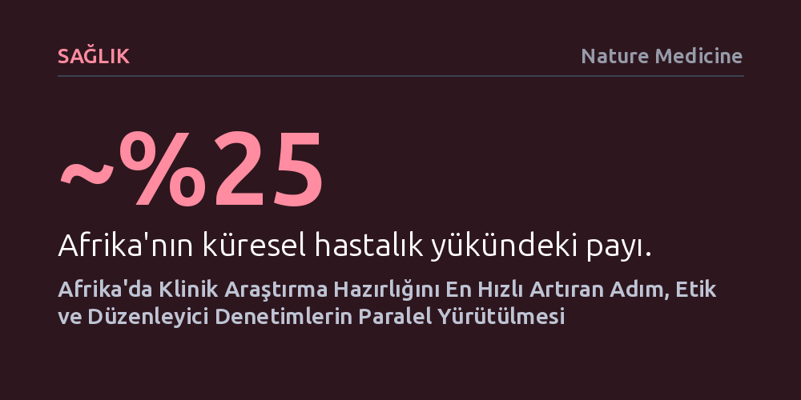

SAGLIK · Nature Medicine · 2026-09-07
Beş Afrika ülkesinde yürütülen TRACE girişimi, klinik araştırmalara hazır oluşu en hızlı artıran müdahalenin teknik kapasite artışı değil, etik ve yasal onay süreçlerinin eşzamanlı yürütülmesi olduğunu ortaya koydu.
Klinik araştırmalardaki gecikmelerin temel çözümünün tek başına maddi kaynak ya da teknik eğitim değil, birbiri ardına işleyen hantal onay bürokrasisini eşzamanlı hale getirmek olduğunu gösteriyor.

Dünya genelindeki toplam hastalık yükünün yaklaşık dörtte birini Afrika kıtası sırtlanıyor. Buna karşın, dünya çapında yürütülen klinik araştırmaların yalnızca yüzde ikisi bu coğrafyada gerçekleştiriliyor ve küresel sağlık araştırmaları fonlarının da yine yüzde ikisinden daha azı kıtaya ulaşıyor. Bu derin dengesizlik; yeni geliştirilen ilaç, aşı ve tıbbi tedavilerin yerel nüfus üzerindeki etkinliğinin yeterince test edilememesine ve kıtanın küresel bilimsel üretimin çeperinde kalmasına neden oluyor.
Dünya Sağlık Asamblesi bu kronik tabloyu kırmak amacıyla 2022 yılında 75.8 sayılı kararı kabul ederek dünya çapında klinik araştırmaların niteliğini, koordinasyonunu ve hesap verebilirliğini güçlendirme çağrısı yaptı. Ancak bu çağrıyı sahada somut bir karşılığa dönüştürmek, laboratuvarlara veya sağlık merkezlerine yalnızca ilave para akıtmakla mümkün olmuyor; öncelikle hangi yapısal tıkanıklığın çözülmesi gerektiğini doğru tespit etmek gerekiyor.
Ruanda, Tanzanya, Nijerya, Zimbabve ve Kenya olmak üzere beş Afrika ülkesinde yürütülen TRACE (Klinik Araştırma Düzenleme ve Etik İnceleme Optimizasyonu) girişimi, bu yapısal darboğaza pratik bir çözüm aradı. Girişim; her ülkenin ulusal etik komiteleri, kurumsal inceleme kurulları ve ulusal ilaç düzenleme otoriteleriyle doğrudan ortaklık kurarak denetim süreçlerindeki verimsizlikleri masaya yatırdı.
Elde edilen sonuçlar, geleneksel kalkınma yardımı anlayışının aksine, klinik araştırmalara hazır oluş seviyesini en hızlı ve en ölçülebilir biçimde yükselten hamlenin tek başına teknik kapasite yatırımları olmadığını ortaya koydu. Personele soyut teknik eğitimler vermek veya münferit laboratuvar donanımı sağlamak yerine; birbirinden kopuk çalışan bağımsız etik kurullar ile ilaç düzenleme kurumlarının denetimlerini tek ve eşzamanlı (paralel) bir inceleme sürecine bağlamak en büyük kazanımı sağladı.
Normal şartlarda aylar sürebilen sıralı başvuru zincirinde, bir araştırma protokolü önce yerel kurulların, ardından ulusal etik komitesinin, en son ise ilaç otoritesinin onayını sırayla beklemek zorundaydı. TRACE modeli, tüm bu kurumların aynı başvuru dosyası üzerinde eşgüdüm içinde ve paralel çalışmasını sağlayarak güvenlikten ödün vermeden bekleme sürelerini kökten azalttı.
Gates Vakfı desteğiyle hazırlanan bu çalışma, küresel sağlık politikalarında sıkça düşülen 'her sorunu daha fazla bütçe veya cihazla çözme' varsayımını sorgulatıyor. Kaynak kısıtlılığı yaşayan düşük ve orta gelirli ülkelerde, mevcut onay mekanizmaları birbirleriyle entegre çalışmadığı sürece dışarıdan aktarılan mali kaynaklar bürokratik hantallık içinde eriyip gidiyor.
Beş ülkeden çıkan bu ortak ders, Afrika'nın araştırma ekosistemini canlandırmak için ilk ve en kritik müdahalenin yönetsel işleyiş mimarisine yapılması gerektiğini gösteriyor. Etik inceleme ile mevzuat denetimini uyumlu bir paralel hatta oturtmak, yüksek maliyetli altyapı projelerine kıyasla çok daha düşük bir bütçeyle hayata geçirilebiliyor ve kıtadaki hastaların hayati tedavilere güvenle erişimini belirgin biçimde hızlandırıyor.